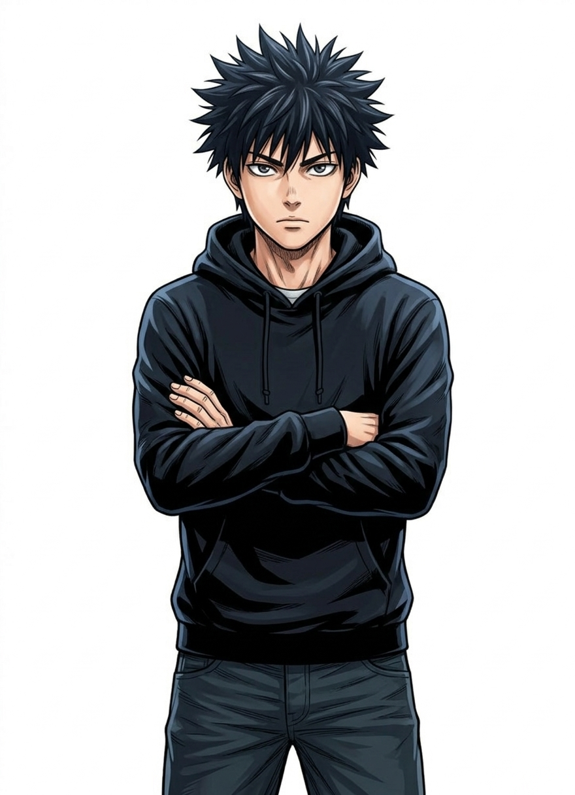
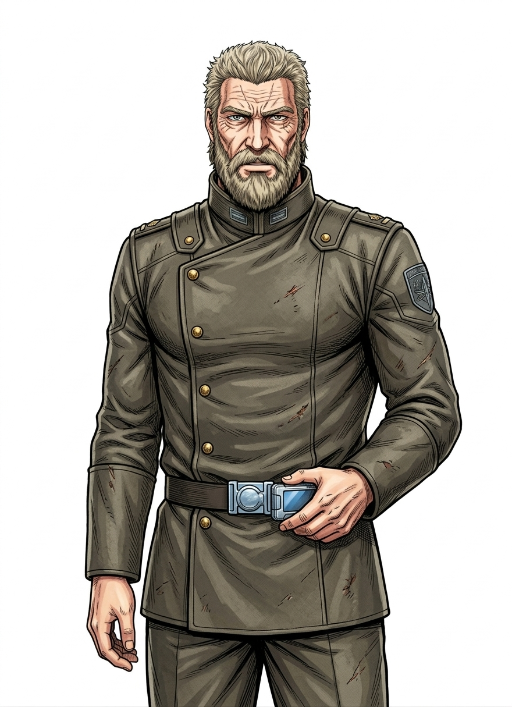
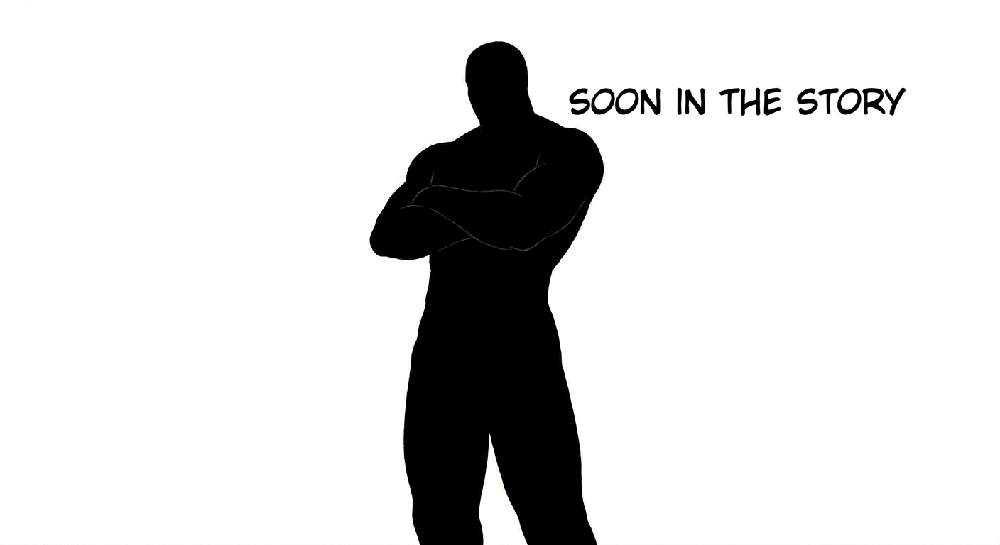

ZEN
Protagonist / The TranscendedThe Look
Lean, compressed muscle with spiky hair. Marked by Gamma Cracks that vent white steam. His violet-black eyes leave trails when moving.

Lean, compressed muscle with spiky hair. Marked by Gamma Cracks that vent white steam. His violet-black eyes leave trails when moving.

A "Silverback Gorilla" frame. Defined by absolute Weight; he looks immovable and rooted to the planet's core.

Physical Perfection with gold spinal halos and liquid-black gravity mantles. They harvest planets with zero emotion.